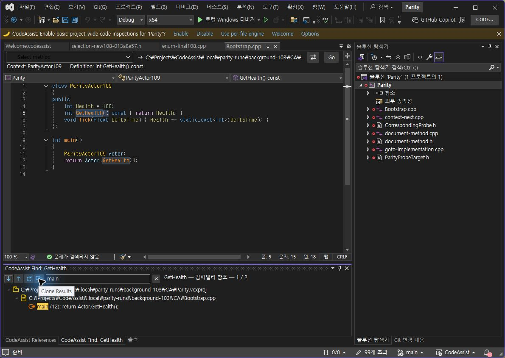
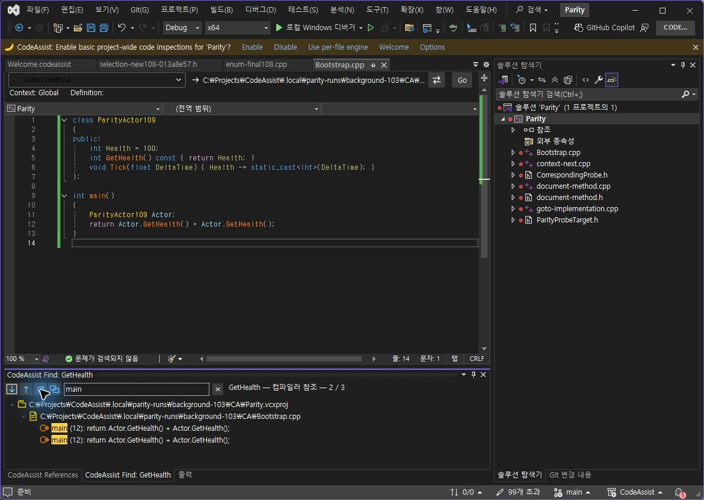
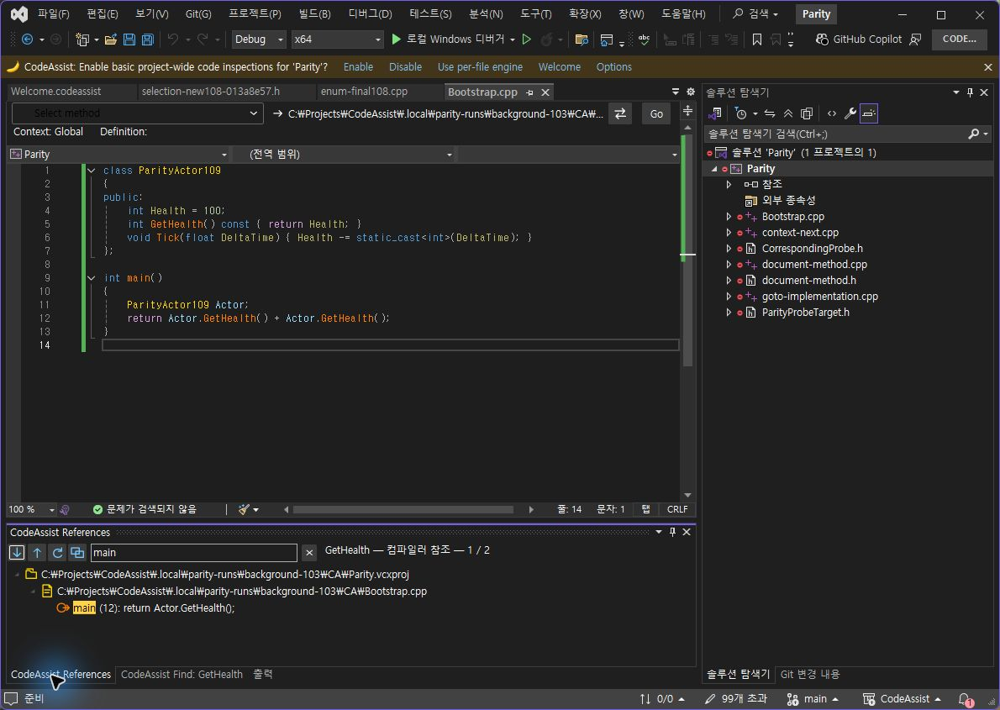

다음·이전 버튼 옆에 직접 그린 새로 고침 화살표와 겹친 창 복제 아이콘을 추가했습니다. 새로 고침은 원래 검색 문서·위치·심볼을 유지한 실제 재검색입니다. 복제 버튼은 해당 창의 결과 배열·필터·검색 콜백을 별도로 보존합니다. 재검색 실패는 이전 결과를 새 통과로 바꾸지 않고 오류로 표시하도록 구현했습니다. 실패 분기는 이번 실행에서 검증하지 않았습니다.
| 검사 | VA | CA 0.0.114 |
|---|---|---|
| main 필터 상태에서 복제 버튼 클릭 | main·표시 한 행 유지 | main·표시 한 행 유지 |
| 같은 문서에 호출 하나 추가 후 새로 고침 | 전체 2→3, 표시 1→2행 | 전체 2→3, 표시 1→2행 |


CA 복제 탭을 새로 고친 뒤 원본 탭으로 전환했습니다. 복제는 2/3, 원본은 기존 1/2를 유지했습니다. 이 독립성 확인은 CA 단독 추가 검사이며 VA와 비교한 표본 수에는 더하지 않았습니다.

VA 10.9.2630.0 / CA 0.0.114 / VS 17.14.37531.7. 동일한 저장 코드임을 두 편집기 본문으로 확인했습니다. 검사 후 양쪽 원본 본문·저장 상태·디스크 SHA256 8A9D8AD69A16FB6813230BE6B2DB5A5717D5DEB55B426B092465777AF2884188을 확인했습니다. 새로 고친 복제 결과는 시험 당시 스냅샷이며 원본 복구 이후의 현재 참조 결과로 해석하지 않습니다.
VS2019·Modern 빌드 성공, Core 317/317(100%) 통과, 검사 프로필 바이너리 6/6 해시 일치.
계산 데이터 · 시험 코드 · VA 실행 본문 · CA 실행 본문 · 설치 해시 · 테스트 로그
XERJ: 사용 — 참조 명령·결과 창·컴파일러 재검색 경로를 검색하고 현재 소스를 확인했습니다. 전체 목표는 진행 중입니다.